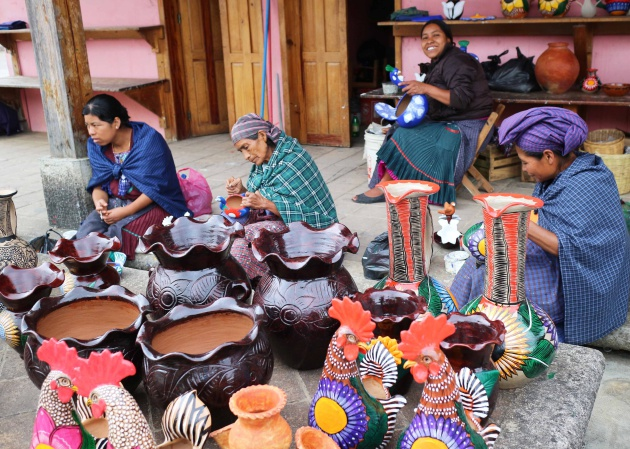
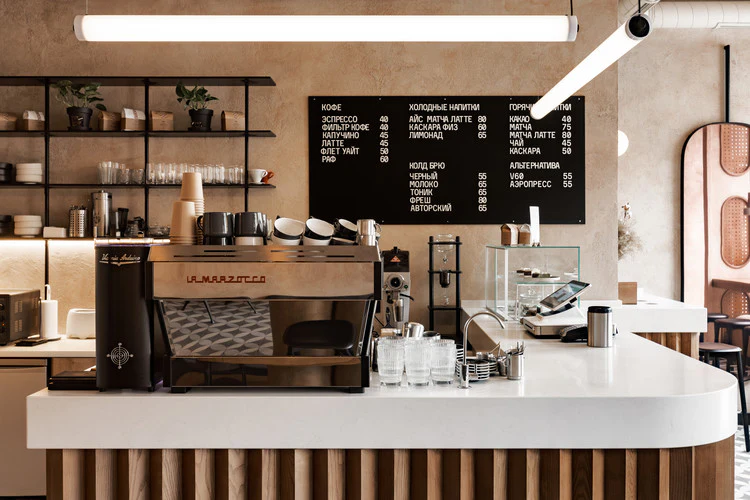

Comunidad
Creemos en el trabajo conjunto y en el valor de apoyar a lo local.

Somos un espacio que celebra el café, honra el bordado y conecta a las personas con la riqueza cultural de Cartago.

EcoBordado Café nace de la idea de unir dos expresiones que nos representan: el aroma del café colombiano y el arte paciente del bordado artesanal.
Queremos que cada visita sea una oportunidad para disfrutar, aprender, apoyar a artesanos locales y llevarse un recuerdo con significado.

Crear experiencias culturales y gastronómicas de calidad que fortalezcan el trabajo artesanal, promuevan el turismo sostenible y aporten al desarrollo de nuestra comunidad.

Para 2030 buscamos ser un referente de turismo cultural en el Valle del Cauca, reconocido por la innovación, la sostenibilidad y el apoyo al talento local.
Creemos en el trabajo conjunto y en el valor de apoyar a lo local.
Transformamos las tradiciones artesanales en experiencias memorables.
Promovemos decisiones responsables con las personas y el entorno.